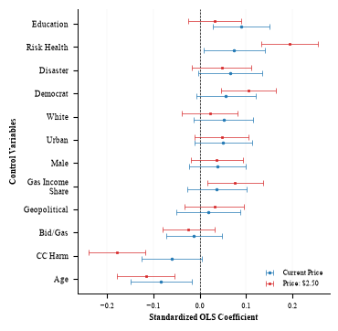
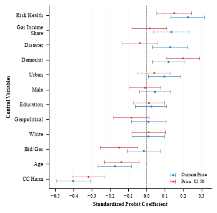
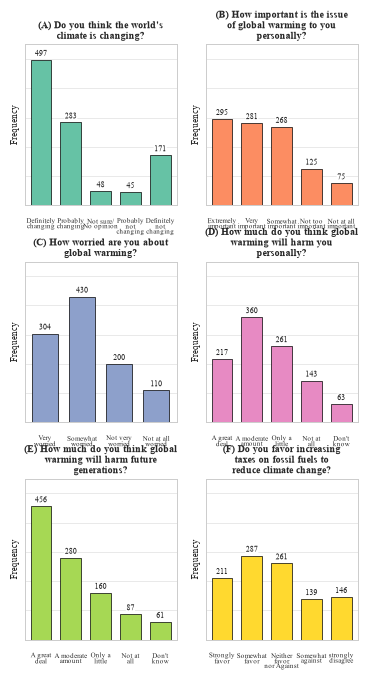
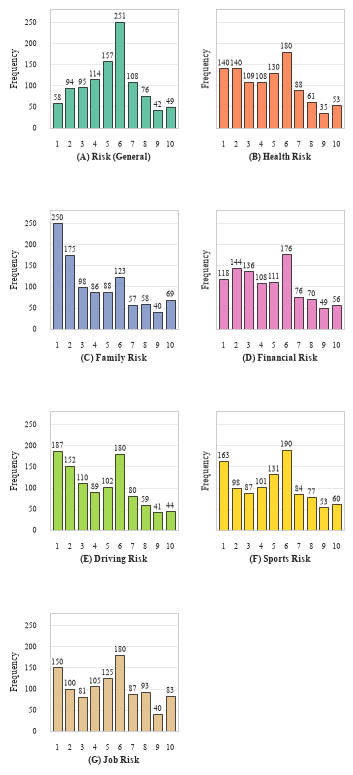
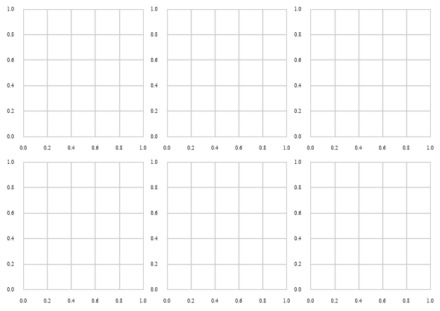

import sys
print(sys.executable)
print(sys.version)/Users/freebird/Downloads/VS Code/prasangapaudel-portfolio/.venv/bin/python
3.13.3 (v3.13.3:6280bb54784, Apr 8 2025, 10:47:54) [Clang 15.0.0 (clang-1500.3.9.4)]import sys
print(sys.executable)
print(sys.version)/Users/freebird/Downloads/VS Code/prasangapaudel-portfolio/.venv/bin/python
3.13.3 (v3.13.3:6280bb54784, Apr 8 2025, 10:47:54) [Clang 15.0.0 (clang-1500.3.9.4)]This notebook collects the Python visualizations developed for the manuscript in one reproducible, long-form document. Each section presents the purpose of a figure, the Python code used to generate it, and the resulting visualization. The individual scripts are kept in this same folder so they can also be reused independently.
The first visualization compares standardized OLS coefficients and 95% confidence intervals under the current gasoline-price scenario and the $2.50-per-gallon scenario.
%run "OLS Std Coefficients.py"
The next figure presents standardized Probit coefficients with 95% confidence intervals for the same two price scenarios.
%run "Probit Coeff plot.py"
This six-panel figure summarizes the distribution of respondents’ perceptions of climate change, the importance and worry associated with global warming, perceived harms, and support for increasing fossil-fuel taxes.
%run "climate perception.py"
This figure presents the frequency distributions for general, health, family, financial, driving, sports, and job risk perceptions.
%run "risk2.py"
This six-panel visualization shows predicted/estimated support with confidence intervals across age, gender, education, political affiliation, bid amount, and race groups under the $2.50 scenario.
%run "support across group 250.py"--------------------------------------------------------------------------- TypeError Traceback (most recent call last) File ~/Downloads/VS Code/prasangapaudel-portfolio/manuscript-visualization/support across group 250.py:14 11 if xlim is not None: ax.set_xlim(xlim) 13 age=pd.DataFrame({"group":[2,3,4,5,6],"mean":[.7687075,.7860262,.7077626,.6486486,.5663717],"lcl":[.6997395,.7325093,.6470541,.585362,.5012675],"ucl":[.8376755,.8395431,.768471,.7119353,.6314758]}); male=pd.DataFrame({"group":[0,1],"mean":[.691042,.6881288],"lcl":[.6521986,.6472601],"ucl":[.7298855,.7289975]}); educ=pd.DataFrame({"group":range(1,9),"mean":[.5581395,.69375,.6619048,.7423581,.7113402,.7857143,.6349206,1],"lcl":[.4034973,.6429758,.5973966,.6852882,.619538,.5398558,.5496948,1],"ucl":[.7127818,.7445242,.7264129,.799428,.8031424,1,.7201465,1]}); dem=pd.DataFrame({"group":[0,1],"mean":[.6212121,.8072917],"lcl":[.584108,.7676649],"ucl":[.6583162,.8469184]}); bid=pd.DataFrame({"group":[.05,.15,.25,.35],"mean":[.7352941,.7427184,.6415094,.6904762],"lcl":[.6742408,.6825236,.5956781,.6274359],"ucl":[.7963474,.8029133,.6873408,.7535165]}); white=pd.DataFrame({"group":[0,1],"mean":[.738292,.6637298],"lcl":[.6928591,.6281579],"ucl":[.7837249,.6993017]}) ---> 14 fig,axs=plt.subplots(2,3,figsize=(190/25.4,5.2)); plot_ci(axs[0,0],age,"Age Group","Age","A",show_ylabel=True,xticks=[2,3,4,5,6],xlim=(1.5,6.5)); plot_ci(axs[0,1],male,"Gender","Gender","B",binary=True,labels=["Non-Male","Male"]); plot_ci(axs[0,2],educ,"Education Level","Education","C",xticks=list(range(1,9)),xlim=(.5,8.5)); plot_ci(axs[1,0],dem,"Political Affiliation","Political Affiliation","D",binary=True,labels=["Non-Democrat","Democrat"],show_ylabel=True); plot_ci(axs[1,1],bid,"Bid Amount ($)","Bid Amount","E",xticks=[.05,.15,.25,.35],xlim=(.02,.38)); plot_ci(axs[1,2],white,"Race","Race","F",binary=True,labels=["Non-White","White"]); plt.subplots_adjust(left=.075,right=.985,bottom=.14,top=.91,wspace=.30,hspace=.70); plt.show() File ~/Downloads/VS Code/prasangapaudel-portfolio/manuscript-visualization/support across group 250.py:7, in plot_ci(ax, df, xlabel, title, label, binary, labels, show_ylabel, xticks, xlim) 5 df=df.copy() 6 for c in ["mean","lcl","ucl"]: df[c]*=100 ----> 7 lower=df.mean-df.lcl; upper=df.ucl-df.mean; x=[.45,.55] if binary else df.group.values 8 ax.errorbar(x,df.mean.values,yerr=[lower.values,upper.values],fmt="o-",color="black",linewidth=.6,markersize=4.5,markerfacecolor="#1f77b4",markeredgecolor="black",markeredgewidth=.7,elinewidth=.8,capsize=3,capthick=.8,zorder=3); ax.set_ylim(0,100); ax.set_yticks([0,20,40,60,80,100]); ax.set_ylabel("Support (%)" if show_ylabel else "",fontsize=7.5); ax.set_xlabel(xlabel,fontsize=7.5); ax.set_title(title,fontsize=8.5,fontweight="bold",pad=4); ax.text(-.12,1.06,f"({label})",transform=ax.transAxes,fontsize=8.5,fontweight="bold",va="bottom"); ax.grid(axis="y",color="0.85",linewidth=.5); ax.grid(axis="x",visible=False) 9 if xticks is not None: ax.set_xticks(xticks) File ~/Downloads/VS Code/prasangapaudel-portfolio/.venv/lib/python3.13/site-packages/pandas/core/ops/common.py:85, in _unpack_zerodim_and_defer.<locals>.new_method(self, other) 82 other = sanitize_array(other, None) 83 other = ensure_wrapped_if_datetimelike(other) ---> 85 return method(self, other) File ~/Downloads/VS Code/prasangapaudel-portfolio/.venv/lib/python3.13/site-packages/pandas/core/arraylike.py:202, in OpsMixin.__rsub__(self, other) 200 @unpack_zerodim_and_defer("__rsub__") 201 def __rsub__(self, other): --> 202 return self._arith_method(other, roperator.rsub) File ~/Downloads/VS Code/prasangapaudel-portfolio/.venv/lib/python3.13/site-packages/pandas/core/series.py:6751, in Series._arith_method(self, other, op) 6749 def _arith_method(self, other, op): 6750 self, other = self._align_for_op(other) -> 6751 return base.IndexOpsMixin._arith_method(self, other, op) File ~/Downloads/VS Code/prasangapaudel-portfolio/.venv/lib/python3.13/site-packages/pandas/core/base.py:1644, in IndexOpsMixin._arith_method(self, other, op) 1641 rvalues = np.arange(rvalues.start, rvalues.stop, rvalues.step) 1643 with np.errstate(all="ignore"): -> 1644 result = ops.arithmetic_op(lvalues, rvalues, op) 1646 return self._construct_result(result, name=res_name, other=other) File ~/Downloads/VS Code/prasangapaudel-portfolio/.venv/lib/python3.13/site-packages/pandas/core/ops/array_ops.py:289, in arithmetic_op(left, right, op) 285 _bool_arith_check(op, left, right) # type: ignore[arg-type] 287 # error: Argument 1 to "_na_arithmetic_op" has incompatible type 288 # "Union[ExtensionArray, ndarray[Any, Any]]"; expected "ndarray[Any, Any]" --> 289 res_values = _na_arithmetic_op(left, right, op) # type: ignore[arg-type] 291 return res_values File ~/Downloads/VS Code/prasangapaudel-portfolio/.venv/lib/python3.13/site-packages/pandas/core/ops/array_ops.py:220, in _na_arithmetic_op(left, right, op, is_cmp) 217 func = partial(expressions.evaluate, op) 219 try: --> 220 result = func(left, right) 221 except TypeError: 222 if not is_cmp and ( 223 left.dtype == object or getattr(right, "dtype", None) == object 224 ): (...) 227 # Don't do this for comparisons, as that will handle complex numbers 228 # incorrectly, see GH#32047 File ~/Downloads/VS Code/prasangapaudel-portfolio/.venv/lib/python3.13/site-packages/pandas/core/computation/expressions.py:252, in evaluate(op, left_op, right_op, use_numexpr) 249 if op_str is not None: 250 if use_numexpr: 251 # error: "None" not callable --> 252 return _evaluate(op, op_str, left_op, right_op) # type: ignore[misc] 253 return _evaluate_standard(op, op_str, left_op, right_op) File ~/Downloads/VS Code/prasangapaudel-portfolio/.venv/lib/python3.13/site-packages/pandas/core/computation/expressions.py:83, in _evaluate_standard(op, op_str, left_op, right_op) 81 if _TEST_MODE: 82 _store_test_result(False) ---> 83 return op(left_op, right_op) File ~/Downloads/VS Code/prasangapaudel-portfolio/.venv/lib/python3.13/site-packages/pandas/core/roperator.py:16, in rsub(left, right) 15 def rsub(left, right): ---> 16 return right - left TypeError: unsupported operand type(s) for -: 'method' and 'float'

The final figure repeats the demographic and bid-group comparison for the current gasoline-price scenario, allowing the two price environments to be compared directly.
%run "support across groups current.py"--------------------------------------------------------------------------- TypeError Traceback (most recent call last) File ~/Downloads/VS Code/prasangapaudel-portfolio/manuscript-visualization/support across groups current.py:14 11 if xlim is not None: ax.set_xlim(xlim) 13 age=pd.DataFrame({"group":[2,3,4,5,6],"mean":[.6258503,.6812227,.6027397,.4864865,.3230088],"lcl":[.5467015,.620412,.5374206,.420227,.2615764],"ucl":[.7049992,.7420335,.6680588,.552746,.3844413]}); male=pd.DataFrame({"group":[0,1],"mean":[.5191956,.5573441],"lcl":[.4771941,.513525],"ucl":[.5611972,.6011631]}); educ=pd.DataFrame({"group":range(1,9),"mean":[.4418605,.55625,.4857143,.6026201,.556701,.5,.468254,.8],"lcl":[.2872182,.5015222,.4175605,.5387619,.4560587,.2004108,.3799234,.244711],"ucl":[.5965027,.6109778,.553868,.6664783,.6573434,.7995892,.5565845,1]}); dem=pd.DataFrame({"group":[0,1],"mean":[.4772727,.640625],"lcl":[.4390673,.5924192],"ucl":[.5154781,.6888308]}); bid=pd.DataFrame({"group":[.05,.15,.25,.35],"mean":[.5735294,.5291262,.5141509,.5571429],"lcl":[.5050879,.4603918,.466385,.489408],"ucl":[.6419709,.5978607,.5619169,.6248777]}); white=pd.DataFrame({"group":[0,1],"mean":[.6143251,.4963289],"lcl":[.5640146,.4586823],"ucl":[.6646355,.5339755]}) ---> 14 fig,axs=plt.subplots(2,3,figsize=(190/25.4,5.2)); plot_ci(axs[0,0],age,"Age Group","Age","A",show_ylabel=True,xticks=[2,3,4,5,6],xlim=(1.5,6.5)); plot_ci(axs[0,1],male,"Gender","Gender","B",binary=True,labels=["Non-Male","Male"]); plot_ci(axs[0,2],educ,"Education Level","Education","C",xticks=list(range(1,9)),xlim=(.5,8.5)); plot_ci(axs[1,0],dem,"Political Affiliation","Political Affiliation","D",binary=True,labels=["Non-Democrat","Democrat"],show_ylabel=True); plot_ci(axs[1,1],bid,"Bid Amount ($)","Bid Amount","E",xticks=[.05,.15,.25,.35],xlim=(.02,.38)); plot_ci(axs[1,2],white,"Race","Race","F",binary=True,labels=["Non-White","White"]); plt.subplots_adjust(left=.075,right=.985,bottom=.14,top=.91,wspace=.30,hspace=.70); plt.show() File ~/Downloads/VS Code/prasangapaudel-portfolio/manuscript-visualization/support across groups current.py:7, in plot_ci(ax, df, xlabel, title, label, binary, labels, show_ylabel, xticks, xlim) 5 df=df.copy() 6 for c in ["mean","lcl","ucl"]: df[c]*=100 ----> 7 lower=df.mean-df.lcl; upper=df.ucl-df.mean; x=[.45,.55] if binary else df.group.values 8 ax.errorbar(x,df.mean.values,yerr=[lower.values,upper.values],fmt="o-",color="black",linewidth=.6,markersize=4.5,markerfacecolor="#1f77b4",markeredgecolor="black",markeredgewidth=.7,elinewidth=.8,capsize=3,capthick=.8,zorder=3); ax.set_ylim(0,100); ax.set_yticks([0,20,40,60,80,100]); ax.set_ylabel("Support (%)" if show_ylabel else "",fontsize=7.5); ax.set_xlabel(xlabel,fontsize=7.5); ax.set_title(title,fontsize=8.5,fontweight="bold",pad=4); ax.text(-.12,1.06,f"({label})",transform=ax.transAxes,fontsize=8.5,fontweight="bold",va="bottom"); ax.grid(axis="y",color="0.85",linewidth=.5); ax.grid(axis="x",visible=False) 9 if xticks is not None: ax.set_xticks(xticks) File ~/Downloads/VS Code/prasangapaudel-portfolio/.venv/lib/python3.13/site-packages/pandas/core/ops/common.py:85, in _unpack_zerodim_and_defer.<locals>.new_method(self, other) 82 other = sanitize_array(other, None) 83 other = ensure_wrapped_if_datetimelike(other) ---> 85 return method(self, other) File ~/Downloads/VS Code/prasangapaudel-portfolio/.venv/lib/python3.13/site-packages/pandas/core/arraylike.py:202, in OpsMixin.__rsub__(self, other) 200 @unpack_zerodim_and_defer("__rsub__") 201 def __rsub__(self, other): --> 202 return self._arith_method(other, roperator.rsub) File ~/Downloads/VS Code/prasangapaudel-portfolio/.venv/lib/python3.13/site-packages/pandas/core/series.py:6751, in Series._arith_method(self, other, op) 6749 def _arith_method(self, other, op): 6750 self, other = self._align_for_op(other) -> 6751 return base.IndexOpsMixin._arith_method(self, other, op) File ~/Downloads/VS Code/prasangapaudel-portfolio/.venv/lib/python3.13/site-packages/pandas/core/base.py:1644, in IndexOpsMixin._arith_method(self, other, op) 1641 rvalues = np.arange(rvalues.start, rvalues.stop, rvalues.step) 1643 with np.errstate(all="ignore"): -> 1644 result = ops.arithmetic_op(lvalues, rvalues, op) 1646 return self._construct_result(result, name=res_name, other=other) File ~/Downloads/VS Code/prasangapaudel-portfolio/.venv/lib/python3.13/site-packages/pandas/core/ops/array_ops.py:289, in arithmetic_op(left, right, op) 285 _bool_arith_check(op, left, right) # type: ignore[arg-type] 287 # error: Argument 1 to "_na_arithmetic_op" has incompatible type 288 # "Union[ExtensionArray, ndarray[Any, Any]]"; expected "ndarray[Any, Any]" --> 289 res_values = _na_arithmetic_op(left, right, op) # type: ignore[arg-type] 291 return res_values File ~/Downloads/VS Code/prasangapaudel-portfolio/.venv/lib/python3.13/site-packages/pandas/core/ops/array_ops.py:220, in _na_arithmetic_op(left, right, op, is_cmp) 217 func = partial(expressions.evaluate, op) 219 try: --> 220 result = func(left, right) 221 except TypeError: 222 if not is_cmp and ( 223 left.dtype == object or getattr(right, "dtype", None) == object 224 ): (...) 227 # Don't do this for comparisons, as that will handle complex numbers 228 # incorrectly, see GH#32047 File ~/Downloads/VS Code/prasangapaudel-portfolio/.venv/lib/python3.13/site-packages/pandas/core/computation/expressions.py:252, in evaluate(op, left_op, right_op, use_numexpr) 249 if op_str is not None: 250 if use_numexpr: 251 # error: "None" not callable --> 252 return _evaluate(op, op_str, left_op, right_op) # type: ignore[misc] 253 return _evaluate_standard(op, op_str, left_op, right_op) File ~/Downloads/VS Code/prasangapaudel-portfolio/.venv/lib/python3.13/site-packages/pandas/core/computation/expressions.py:83, in _evaluate_standard(op, op_str, left_op, right_op) 81 if _TEST_MODE: 82 _store_test_result(False) ---> 83 return op(left_op, right_op) File ~/Downloads/VS Code/prasangapaudel-portfolio/.venv/lib/python3.13/site-packages/pandas/core/roperator.py:16, in rsub(left, right) 15 def rsub(left, right): ---> 16 return right - left TypeError: unsupported operand type(s) for -: 'method' and 'float'

The figures in this notebook are presentation versions of the manuscript visualizations. The underlying scripts preserve the numerical values and publication-oriented figure dimensions used for the article. Before journal submission, figure captions, labels, and numerical inputs should be checked against the final regression and survey-analysis outputs.